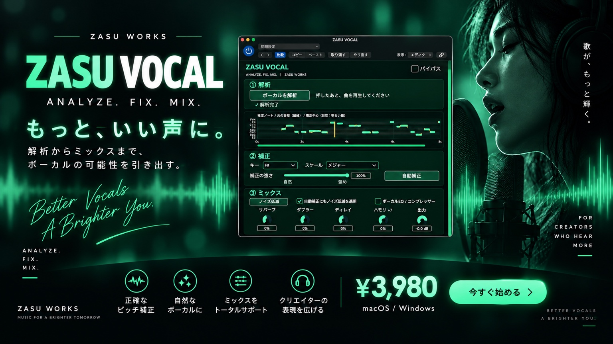
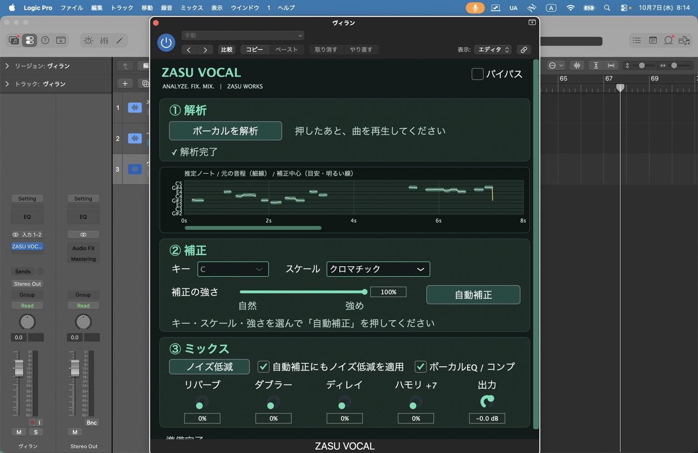

ANALYZE
解析
歌声を再生するだけで、Pitch / Noteを解析。
- 音程を解析
- Note / Blob表示
- 元Pitch軌跡を可視化
- どこをどう歌っているか目で確認
VOCAL PLUGIN / v1.0.0
ANALYZE. FIX. MIX.
歌声を解析して、自然に補正して、そのまま仕上げる。
Logic Proなどの普段使っているDAWで使える
ボーカル専用プラグイン。
発売記念価格
¥3,980 （税込）
購入後のインストール・初期設定は、開発者本人が無料でご案内。無料導入サポートについて →
購入後、決済完了画面の案内からダウンロードできます。

IS THIS YOUR TOOL?
いつものDAWで歌声を整える
音程補正・ノイズ低減・EQ・コンプ・空間系FXをまとめて、歌声を整えるプラグインです。
Mac: AU / VST3 · Windows: VST3
解析・補正済み音声の再生は対応DAW内で使用。StandaloneはリアルタイムFX向けです。
歌声の補正とMIXをまとめるならVOCAL。ノートやピッチカーブを中心に編集したい場合はVOCAL EDITORを比較してください。
THREE STEPS. ONE VOCAL.
見て、整えて、仕上げる。歌声のための3ステップ。
ANALYZE
歌声を再生するだけで、Pitch / Noteを解析。
FIX
Key / Scaleに合わせて、歌い方を残しながら自然に補正。
MIX
そのままボーカルを聴きやすく仕上げる。
PITCH / NOTE / BLOB
元のPitch軌跡とNote / Blob表示で、音程の動きを確認。
歌い方を見ながら、補正の強さを決められます。

FIX + NOISE REDUCTION
AUTO FIX後の補正済み音声にも、
Noise Reductionを適用できます。
音程の補正からノイズ低減、EQ・コンプ、空間づくりまで。
ひとつのプラグインで、歌声の仕上がりを追い込めます。
「自動補正にもノイズ低減を適用」に対応
FOR YOUR VOCAL WORKFLOW
QUICK START
Key / Scaleや補正の強さを変えた場合は、もう一度「自動補正」を押して反映します。StandaloneはリアルタイムFX向けです。解析と補正済み音声の再生は、対応DAW内で使用してください。
Key / Scaleは曲に合わせて指定します。標準の補正強度は70%。聴きながら好みに調整してください。
COMPATIBILITY
Audio Units (AU) / VST3 / Standalone
Apple Silicon / Intel
Universal Binary
ZASU-VOCAL-v1.0.0-macOS-Universal.dmg
VST3 / Standalone
Windows x64
ZASU-VOCAL-v1.0.0-Windows-Setup.exe
ZASU VOCAL v1.0.0はLogic ProでAU実機動作確認済みです。VST3はhost validation済み・VST3対応DAW向け。Cubase実機での確認は未実施です。
インストーラーの署名状態：Mac版はDeveloper ID署名・Apple公証・Staple・Gatekeeper確認済みです。Windows版は現在未署名のため、SmartScreen等の警告が表示される場合があります。
FAQ
ありません。対応DAWのボーカルトラックへプラグインとして挿して使用します。
自然さを残す補正を重視し、標準値は70%です。強度は調整できます。元の歌唱や設定によって仕上がりは変わるため、聴きながら調整してください。
v1.0.0ではユーザーがKey / Scaleを指定します。
EQ / Compressor / Noise Reduction / Reverb / Delay / Doubler / Harmonyなどでボーカルを整えられます。
macOSはAU / VST3 / Standalone、Apple Silicon・Intel Universal Binaryに対応。WindowsはVST3 / Standalone、x64に対応します。ZASU VOCAL v1.0.0はLogic ProでAU実機動作確認済みです。VST3はhost validation済みで、VST3対応DAW向けです。Cubase実機での動作確認は未実施です。
FINISH YOUR SOUND
ZASU VOCAL → ZASU LOUD
さらに最終音圧まで仕上げたい場合は、ZASU LOUDへ。
ZASU LOUDを見るZASU VOCAL / v1.0.0
発売記念価格
¥3,980 （税込）
購入後のインストール・初期設定は、開発者本人が無料でご案内。無料導入サポートについて →
購入後、決済完了画面の案内からダウンロードできます。
macOS / Windows対応
対象はSquareで購入したZASU VOCAL v1.0.0、ZASU LOUD v2.0.0、およびZASU 歌ってみた制作セット（VOCAL + LOUD）です。DAW・FINISH・VOCAL EDITOR・AUDIOおよびBOOTH購入には本保証を適用しません。
現在は従来の7日間返金保証を継続しています。購入後7日以内であれば、実際に使用したうえで「自分には合わなかった」「思っていたものと違った」といった購入者都合でも返金対応します。現行条件の全文・申請に必要な情報をご確認ください。
以下は改定予告です。適用開始日は未定で、まだ適用しません。購入前の表示・Square購入画面等との整合性を確認後、開始日を事前に告知して新規購入に適用します。既存購入者へ不利な条件を遡及適用しません。購入画面や広告に本規定より有利な条件が提示されていた場合は、その条件を尊重します。
対象製品をご購入後7日以内（購入日時から168時間以内）に、製品が正常に動作しない場合や、購入目的に照らして期待した利用が困難である場合など、具体的かつ合理的な理由を添えて返金を申請できます。
申請時には、購入を確認できる情報（Squareレシート・取引IDなど）、対象製品、返金を希望する理由をご記載ください。不具合に関する申請では、可能な範囲でOS・DAWなどの使用環境や発生した問題もお知らせください。過度な証明負担は求めません。
例えば「対応環境で起動できない」「説明された機能を使用できない」「歌唱補正に使う目的だったが、どの操作・結果が支障になるか」など、利用目的と支障が分かる内容を確認します。「合わなかった」と感じた場合も具体的な支障の説明を確認し、主観的という理由だけで除外しません。情報が足りない場合は補足をお願いし、理由の具体性・合理性は申請内容、製品の性質、購入時の保証条件を踏まえて判断します。
申請が7日以内に到達していれば、運営側の返信が8日目以降でも期限内申請として扱います。追加情報の確認中に期限を過ぎても、最初の期限内申請を失効させません。
申請窓口：zasuworks@gmail.com / 公式LINE。会員登録は不要です。確認結果と理由をご案内し、返金する場合は原則として元のSquare決済へ返金します。着金時期はカード会社等により異なります。
二重決済、配布ファイルの不備、当方の責により提供できない場合などの法令・契約上の対応は本保証と区別します。本条は、法令に基づくお客様の権利を制限するものではありません。
7日間返金保証の対象は、ZASU VOCAL v1.0.0、ZASU LOUD v2.0.0、ZASU 歌ってみた制作セット（VOCAL + LOUD）です。下記の利用規約に共通の返金条件を掲載しています。
BOOTHの購入履歴から商品ページとダウンロードをご確認ください。再ダウンロード・販売条件もBOOTHで確認できます。Squareの購入登録は不要です。
BOOTHの商品ページ ↗会員登録・ログインは不要です。このサイトの製品別受け取りページをご利用ください。Squareの領収書メールを保管し、購入済みの場合は再決済しないでください。
Squareの受け取り手順 →返金条件は製品・購入先によって異なります。Squareの販売条件とBOOTHの商品ページをご確認ください。無料導入サポート：インストール・初期設定・プラグインの認識など。zasuworks@gmail.comへ、製品名・OS・DAW・エラー内容を添えてご相談ください。